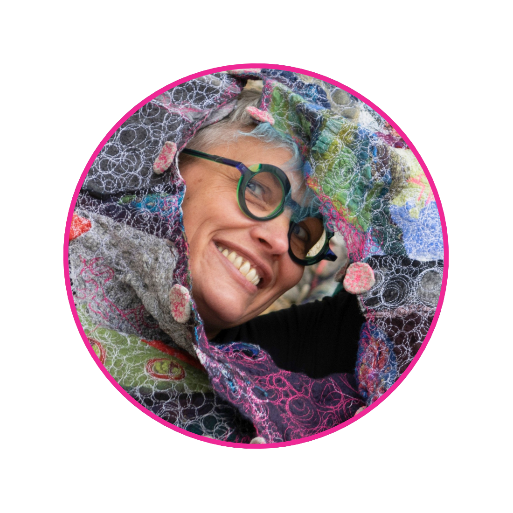

About
Ariane Mariane,
Artist & Gestalt therapy practitioner
Born in Germany and living in France for over 30 years, I am nourished by encounters between cultures, languages and worlds. Curious by nature, I love to explore, experiment and discover new ways of seeing the world. I welcome and support you in German, French and English.
My journey
My journey is a search, both artistic and personal, around creativity, encountering oneself and our capacity to transform our lives.
After studying architecture and working in textile design, I discovered felting in 2004, an ancestral technique that transforms raw wool into fabric. Fascinated, I turned to craft-making. Little by little, other materials and practices enriched my work and allowed me to develop my own, increasingly artistic language.
Creativity gave me a space to find myself, to question my place and to reconnect with the joy of creating (and of living) which, I am convinced, naturally lives in all of us.
It is this child’s curiosity that lives in me as an artist. When I enter into dialogue with the material, it is not only the material that changes under my hands. Nourished by the experience, my perceptions and my ideas change, and so do I.
For me, artistic work is above all an encounter with oneself.
As I found my language, my expression, I developed a new sensitivity to what I love and what I want to do and to live. I understood better who I was, and this allowed me to adjust my life so that it fit me better — at least to a certain degree. At one point, as I was about to follow an unusual path, away from what others had imagined for me, I felt the need to be accompanied in order to make the changes that were beginning within me real. That is when I met Gestalt: first through my own therapy, then through training. This encounter gave a new dimension to my life, and to my work as well.
Today I embrace my way of living and creating differently, and my artistic work has become even freer and more authentic.
My psychocorporal training
I first trained in Germany at the “Bonner Institut für Analytische Gestalttherapie” then in France at the IFFP, Institut Français de Formation Psychocorporelle. In March 2026, I obtained my certificate as a Gestalt practitioner.
Fascinated by the art–body–psychology approach, I also took workshops in Gestalt & clown, Gestalt & dance, authentic theatre, as well as training in “working with the parts of the self” (Anteilearbeit), which draws on “Ego-State Therapy”.
ARTventureLand & ARTventureLab
All these approaches have naturally influenced the way I support my clients in the craft and art workshops I have been running since 2010. In this practice, DIY gradually evolved into experiences of intuitive art, and then into workshops devoted to developing creativity in the broadest sense. With the birth of ARTventureLand and ARTventureLab, I am giving form to an approach built over the course of my experiences between ART & Gestalt. With them I am realising an idea that has lived in me for decades: creating playgrounds of creative exploration for adults. These two spaces – one in person in my studio in the Loir valley, the other by video call – offer to open up the field of possibilities, including that of becoming the creator of our own life.
My artistic approach
My artistic practice has always been fed by a question: “What happens if…?” Today it combines with a proposition from phenomenological Gestalt: “Let’s imagine it was possible…”.
Spontaneous curiosity sets things in motion and guides me in choosing materials and techniques. Without a precise idea, I open myself to give form to what is seeking to emerge. The finished work matters less to me than the process: if I begin again every day with joy, it is because the act of creating makes me vibrate and feel alive.
Create · Move through · Transform
This is the common thread of my journey and of my Art & Gestalt approach: letting art and creativity enrich our relationship with ourselves, with others and with the world, and staying open to what wants to emerge.
Everything is an art of transformation